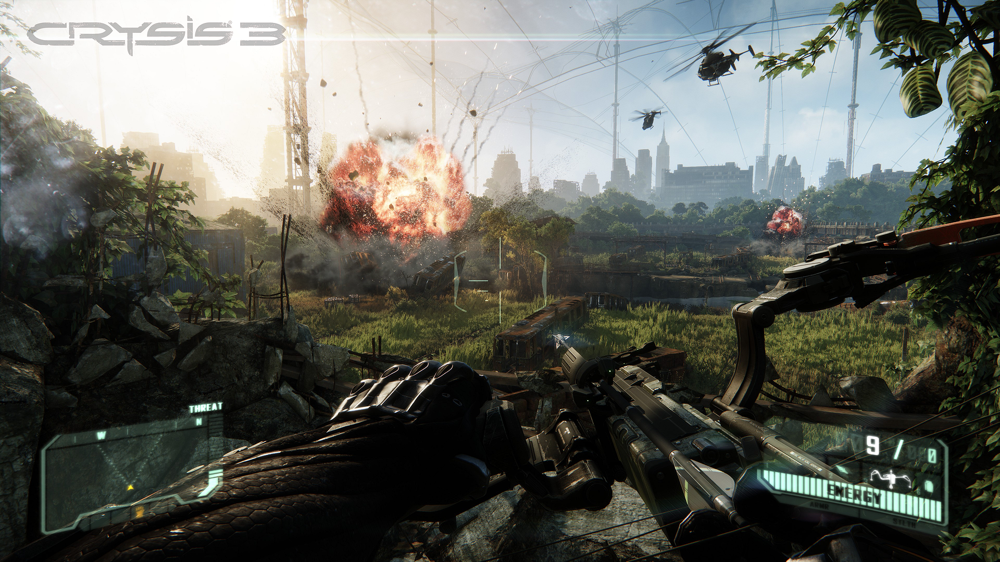
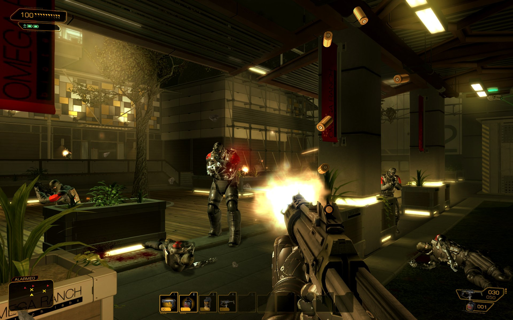

Finding Elizabeth
Pathfinding and Alternative Realism
Jonathan Jin
05/29/14
On Realism
- Realism = common goal among development teams
- Believability
- Credibility
- ↑ realism → ↑ consumer desire → ↑ profit
Graphics
- Commonly used to achieve realism
- Very good at this
- Modern-day graphics hardware → ↓ tech barriers




A Slight Problem
- Visual realism = "straightforward"
- Established tech stack + practices
- ∃ Inherent difficulties associated with computer graphics
- Diminishing returns
- Uncanny Valley
- Impede increase of realism solely by graphical means
- Need: new, alternative ways to ↑ realism
What They Did
- Unique path-finding algorithm for Elizabeth
- Goals
- Algorithmically model humanity & realistic human behavior
- Curiosity
- Autonomy
- Exploration
- Create emotional attachment + investment to her
- Algorithmically model humanity & realistic human behavior
The Algorithm
Key Points
- "Both follow and lead"
- Balance distance to PC
- "Too close is too creepy"
- Free movement between PC and next goal location
- Balance distance to PC
- Leader-follower model
- Points of Interest (POIs)
- Freely inspect + comment on game world objects
Leader-follower model
Leader
class Leader extends Character { private Periphery bubblePersonal; private Periphery bubbleFollower; public FlxPoint randomPointWithinRadius(int radius); public FlxPoint randomPointWithinBubbleFollower(); private void handleKeypress(); private void handleMovement(); }
Follower
class Follower extends Character implements Interaction { private Leader dearLeader; private FlxPoint destCurr; private FlxSprite destMarker; private int destRadius; private Periphery bubbleSight; private void setDestTarget(FlxObject target); private void setDest(int x, int y); private void setDestRandom(); public void update() { boolean isWithinRange = distToPoint(this, this.destCurr) < this.destRadius; if (isWithinRange && (POI i = scanForPOIs()) != null) setDestTarget(i); else setDestRandom(); } }
class Follower extends Character implements Interaction { // ... public POI scanForPOIs() { foreach (i in currentStage.interactables) { boolean isWithinRange = distBetween(this, i) < this.bubbleSight.radius; if (isWithinRange) return i; } return null; } public void update() { this.move(); if (distanceToPoint(this, this.destCurr) < this.destRadius) { if ((POI i = scanForPOIs()) != null) interact(i); setRandomDest(); } } public void interact(POI item); public void say(String line); }
Destination Points
- At any given moment, Follower has a destination point
- Will try to move toward that point
- Upon reaching, set new destination point
Map: Key Elements
class PlayState extends FlxState { private FlxSprite goal; private List<POI> interactables; // randomly generated }
Points of Interest (POIs)
- Points of Interest (POIs) in environment
- Follower may interact with any POI within
Follower.bubbleSight.radius- Interactions:
- Clever quips
- Item acquisition
- Etc.
- Interactions: